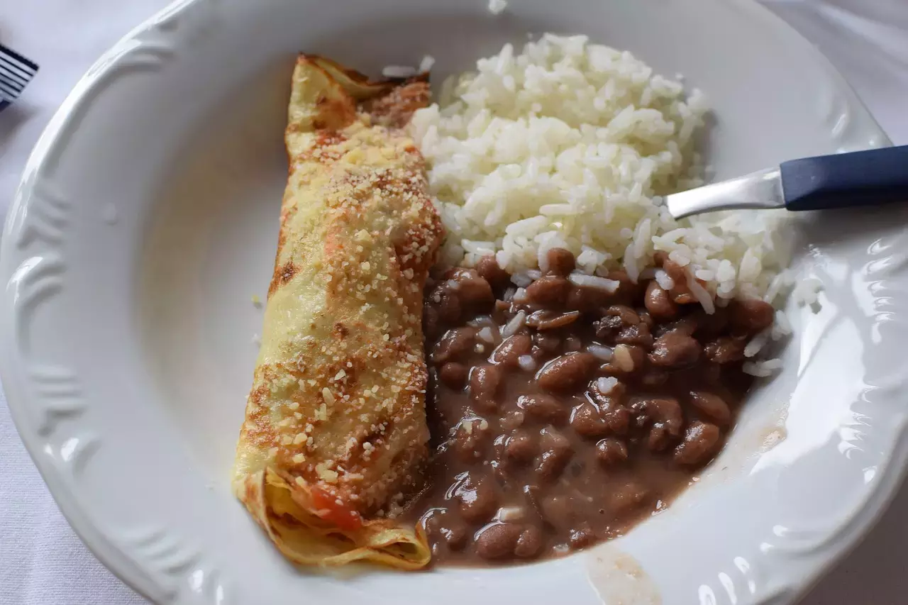

Arroz, feijão e panqueca, uma delícia!
Arroz e feijão
Ingredientes:
1 - 3 xícaras de arroz cru;
2 - 2 concha de feijão cozido com o caldo;
3 - Alho, cebola, sal e óleo (a gosto);
4 - 2 copos de água (250ml).
Modo de preparo:
1 - Coloque o óleo, a cebola e o alho para fritar;
2 - Em seguida, coloque o arroz para refogar;
3 - Depois do arroz refogado, acrescente o feijão (cozido) e continue mexendo;
4 - Logo em seguida, coloque o sal (a gosto) e a água, pode ser quente;
5 - Tampe a panela e deixe os no fogo por aproximadamente 18 minutos, desligue o fogo e deixe a pressão sair normalmente.